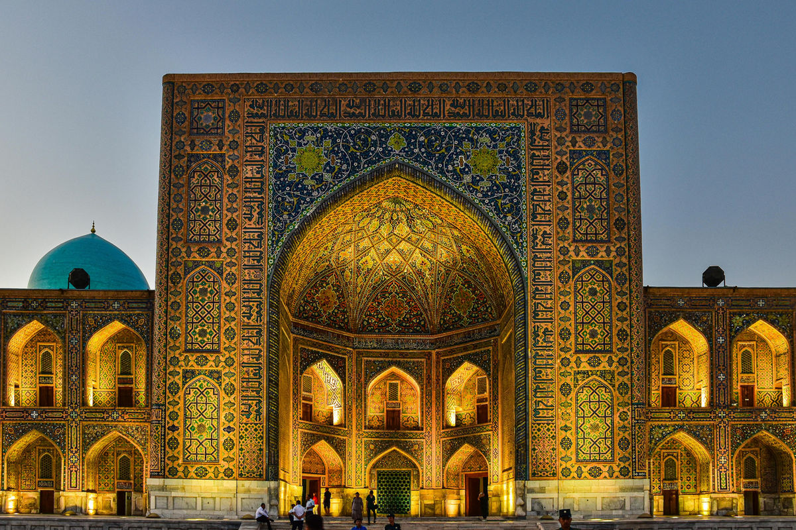

01
Master of the word
Author of the Khamsa and four Turkic divans of lyric poetry, often called the "Chaucer of the Turks."

Poet, thinker, Sufi, statesman and patron of the arts. We bring Navoi's work and ideals to American and international audiences through translations, Navoi Days, the Navoi Prize and programs for young people.
Mir Alisher Navoi (1441–1501) was the leading literary figure of the Timurid Renaissance in Herat. He wrote some thirty works over three decades, served as a senior statesman, and funded hundreds of public buildings. Uzbek literature honors him as its founding classic, and the Turkic and Persian literary worlds share his legacy.
His ideal of insoni komil, the complete human, joins excellence in one's work with justice, generosity, humility and service. That ideal is the foundation of everything the Society does.
Born in Herat into a family of the Timurid court.
Becomes a senior emir and counselor to Sultan Husayn Bayqara, his childhood schoolmate.
Writes the Khamsa, five epic poems in Turkic answering the Persian Khamsa of Nizami.
Completes The Judgment of Two Languages and Mahbub al-Qulub, his book on justice and the duties of every class.
Dies in Herat, leaving a legacy honored across Central Asia and beyond.
Navoi's life offers standards for literature, learning, public service and giving that remain relevant today. Each one shapes a part of our work.
The Society is launching in 2027. These are the programs we are building, with partners in the United States, Uzbekistan and beyond.
Every February, around Navoi's birthday on February 9, readings in Uzbek and English, lectures and concerts take place at universities and in communities across the United States under a shared program. One main event each year is held in the United States or in Uzbekistan.
Many of Navoi's works have never been fully translated into English. We are preparing the first complete English translation of Mahbub al-Qulub (Beloved of Hearts), his reflections on justice, society and character. A provisional draft will be published first and refined with specialist review over time.
An essay and translation contest for high school and university students, named after Navoi's poem of the soul's journey, encouraging young people to read and respond to his work.
Talks, webinars and scholarly meetings with specialists in Central Asian, Turkic and Persian literature, connecting American and Uzbek academic communities.
An English and Uzbek online resource on Navoi's life and works, with a bilingual reader of selected passages and audio recordings.
The prize is modeled on Navoi's five-part Khamsa. Each epic carries its own ideal, and each becomes a category. An independent jury will select the laureates; the first prize is planned for February 2028.
The International Navoi Society is a program of Vatandosh Connect, a 501(c)(3) nonprofit based in North Carolina. Decisions rest with the Vatandosh Connect Board of Directors, and gifts to the Society are tax-deductible, tracked separately and used only for its programs.
Our principles
We welcome universities, cultural institutions, scholars, translators, artists and supporters who want to help share Navoi's legacy.
Bring a reading, lecture or concert to your university, library or community center in February.
Scholars, translators and teachers can help review translations, give lectures or mentor young participants.
Your gift funds translations, events and the youth contest. Please note "Navoi Society" with your donation.